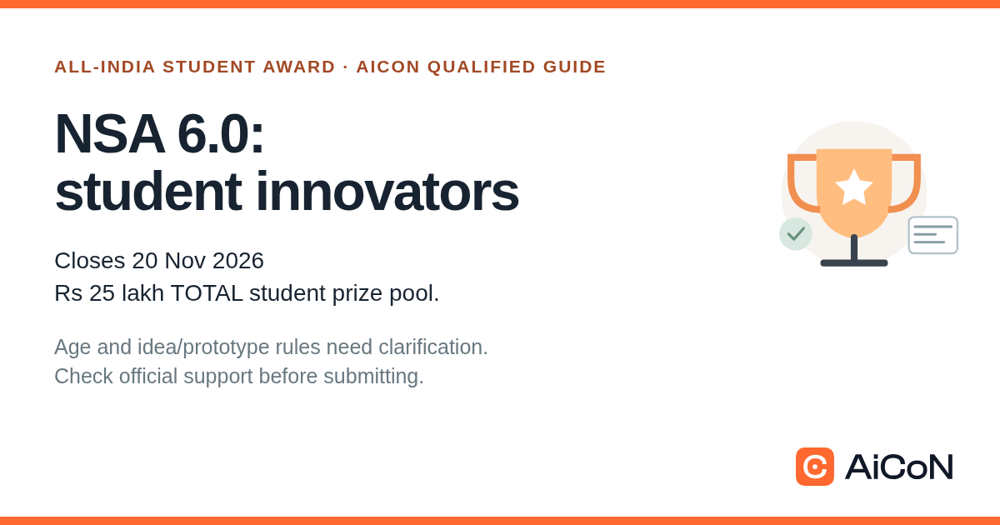
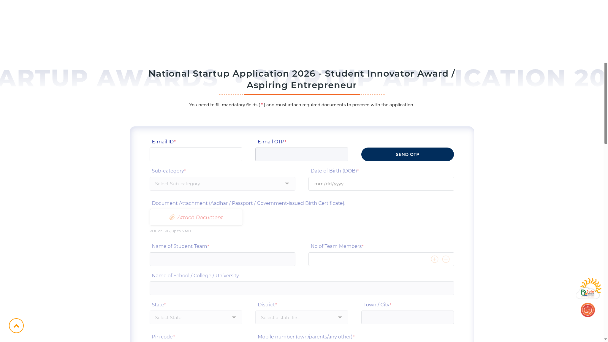
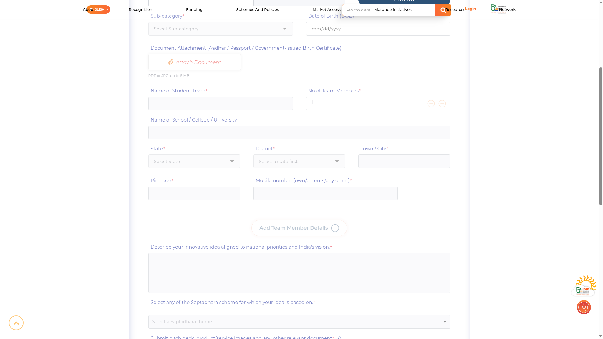
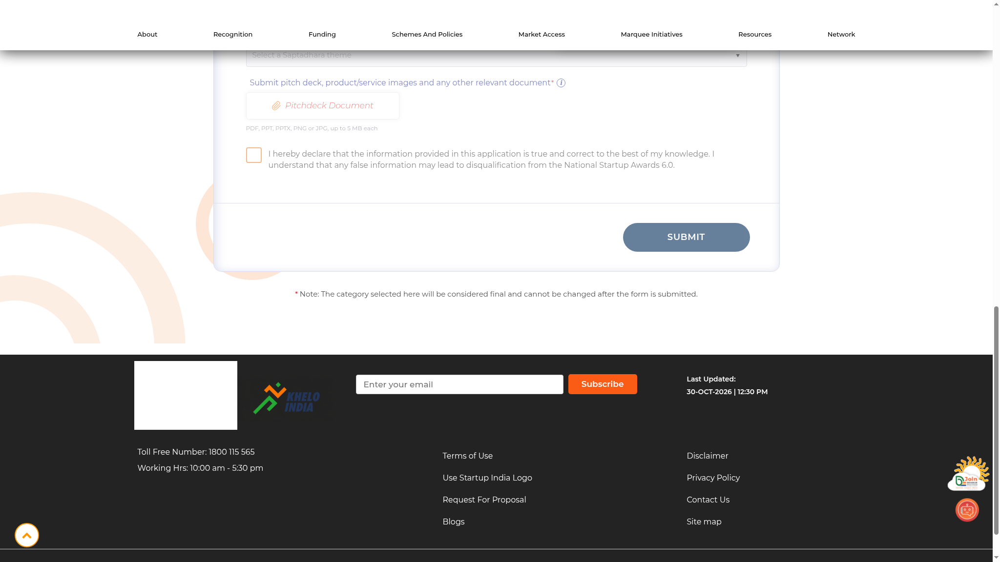

NSA 6.0 Student Innovator Award: the opportunity and the rules to clarify
Have a student-led invention, working model or product idea? National Startup Awards 6.0 has a new Student Innovator / Aspiring Entrepreneur category, with a verified total prize pool of Rs 25 lakh across four age groups. The official student brief says individuals or teams of up to four can participate without DPIIT startup recognition. But the organiser's own materials leave important eligibility details unclear. Read those limits before spending time on a submission.

- Idea or prototype? The student brief's eligibility paragraph asks for a prototype, MVP, working model or proof of concept. Its application annexure also lists an idea stage, while the live form asks applicants to describe their innovative idea and attach supporting material. We cannot confirm that an idea-only entry qualifies.
- Exactly 14, 16 or 18? Published age bands overlap at these ages. No age-calculation cutoff date was found in the sources checked. Do not guess which category to choose: the live form says it cannot be changed after submission.
- Which selection process is final? The FAQ says 5-7 nominations per State/UT; the student brief describes up to 10 teams. Parts of the brief are labelled proposed. Treat those process details as unsettled.
Official help: startup.support@investindia.org.in or 1800 115 565. The website lists working hours of 10:00 am-5:30 pm, without specifying working days in the contact block. Ask for a written answer about your age, school/college status and development stage before submitting.
What is officially announced?
DPIIT's official announcement says NSA 6.0 applications opened on 27 October and close on 20 November 2026. It introduces the student award for school and college innovators across India. This is separate from the main startup categories, where DPIIT recognition and other startup-specific conditions apply.
The student brief says DPIIT recognition is not required for this student category and permits individuals or teams of up to four. The landing page describes school and undergraduate/college students. Do not read the 18+ age band as an award open to every adult regardless of student status. We did not establish a separate upper-age limit or a rule covering all postgraduate applicants.
The official date is confirmed, but we are not treating the page's countdown as a guaranteed final submission timestamp or inventing a closing timezone. Complete the support check and any eligible submission well before the date. The portal and guidance can change.
The student prizes, without the misleading headline
The Rs 25 lakh is the entire student-category prize pool, not a scholarship amount or Rs 25 lakh for each student. The student brief and landing page list one winner and one runner-up in each of four groups:
Budding Innovators
Published age band: 10-14 years
Winner: Rs 3 lakh
Runner-up: Rs 2 lakh
Rising Innovators
Published age band: 14-16 years
Winner: Rs 3 lakh
Runner-up: Rs 2 lakh
Young Changemaker
Published age band: 16-18 years
Winner: Rs 4 lakh
Runner-up: Rs 2 lakh
Emerging Entrepreneurs
Published age band: 18+ years
Winner: Rs 6 lakh
Runner-up: Rs 3 lakh
These are award amounts by entry/category, not a promise of that sum to every team member. We did not establish team-wise disbursement, tax deductions or minor-recipient arrangements. Check the final applicable terms with the organiser. Selection is competitive; submitting a form does not guarantee a prize. The overlapping ages above are reproduced as published, not resolved by AiCoN.
Which projects fit the stated themes?
The student brief connects the award to seven broad streams: manufacturing; agriculture and food processing; technology and innovation; connectivity and transport; defence-related innovation; green and blue economy; and cultural/creative industries, tourism and related areas.
Its examples include low-cost tools for small manufacturers, post-harvest storage, water conservation, assistive devices, road-safety solutions and artisan platforms. These are examples, not automatic eligibility approvals. Choose a theme because it matches your real work, not because a theme sounds likely to win.
The brief's proposed student scoring gives innovation 45 points, scalability 25, economic impact 20, and inclusivity/team diversity 10. We are not presenting this draft-labelled process as a guaranteed final judging rubric. A sensible preparation step is to explain the problem, intended users, what is different, current evidence and practical limits honestly.
What the live application actually shows
We followed the official landing page's application control, chose Student Innovator Award / Aspiring Entrepreneur, and opened the student-specific form. It was accessible without creating a DPIIT-recognised startup account. We inspected blank fields only: no email, OTP, identity document, project, declaration or application was entered or submitted. Reaching the form is not a successful application test.

Step-by-step preparation and form walkthrough
- Settle eligibility first. Send official support your exact age/DOB situation, course/class, whether applying individually or as a team, and whether you have an idea or demonstrable prototype. Do not send identity scans just to ask a general eligibility question.
- Start at the official NSA 6.0 landing page. Read the student PDF, not only the general rules for 22 startup categories. Choose the student option in the Apply dialog. The student form's URL includes
category=student-led. - Use your own accessible email. The form shows an email field, Send OTP and an email-OTP field. Complete this yourself through the official site. Never forward an OTP to an unsolicited caller or helper. We did not request an OTP and cannot verify later validation steps.
- Choose the confirmed age sub-category and enter DOB. The form offers the four published age bands. Its identity upload area names Aadhaar, passport or a government-issued birth certificate and lists PDF/JPG up to 5 MB. Upload only what is required for your application after checking the organiser's instructions and privacy terms.
- Enter team, institution and location details. Visible fields include team name, number of members, school/college/university, State, district, town/city, PIN and a mobile number that may be your own, a parent's or another contact. There is an Add Team Member Details control. Get team members' permission before entering their information; minors should involve a parent/guardian and their institution.
- Describe the real problem and solution. State who needs it, what you built, how it works, what is new, what evidence exists and what remains untested. Do not fabricate users, revenue, a prototype or social impact. Select the matching Saptadhara theme.
- Attach supporting evidence. The live form labels a pitch-deck/document upload for pitch decks, product/service images and other relevant material. It lists PDF, PPT, PPTX, PNG or JPG, up to 5 MB each. Prepare a short deck, clear photos and honest test evidence. No required deck length or video requirement was established from our form check.
- Review before any final action. Read the declaration and final applicable rules, including team/guardian consent, intellectual-property and prize arrangements. The form says the category is final after submission. Only submit if eligibility and terms are clear, and save the acknowledgement if one is generated. We did not test submission or confirmation.


Before sharing an invention or a child's details
Do not assume that an award application keeps every project detail confidential or establishes intellectual-property protection. We did not recover a complete final student-specific set of minor-consent, IP, team-prize or disbursement terms. Ask the organiser for the terms that apply to the student category, and read the portal's privacy/terms pages before uploading identity documents or unpublished technical detail. General startup rules should not be copied into the student category by assumption.
We saw no payment field on the blank student form, but did not submit it and cannot certify every later step is fee-free. Do not pay an unofficial agent or buy a course, registration service or loan to pursue an unconfirmed award claim.
Application walkthrough videos
No reliable step-by-step English or Malayalam application video for this exact 2026 student category was verified in our search. Rather than linking an older startup-category tutorial that may send students to the wrong route, this guide uses the official form screenshots and organiser's student brief. Do not mistake a video for official clarification of unclear eligibility.
Official links and support
- NSA 6.0 landing page, FAQ and support.
- Student Innovator / Aspiring Entrepreneur PDF.
- Official student form, reached through the organiser's own student route. Check eligibility before proceeding.
- DPIIT/PIB announcement: closing date and student prize-pool distinction.
- General 22-category startup rules, provided for context, not assumed to settle student-specific terms.
- Portal terms and privacy policy.
Support: startup.support@investindia.org.in | 1800 115 565, listed hours 10:00 am-5:30 pm.
AiCoN independent qualified guide, checked 17 November 2026. Not an endorsement or eligibility approval. Where official sources conflict, we have left the point unresolved instead of choosing a rule for you. No application, contact or payment made on a student's behalf.